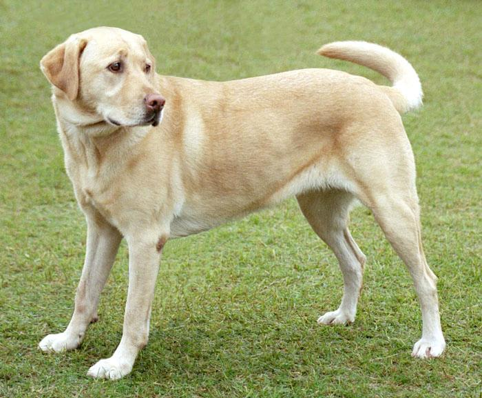
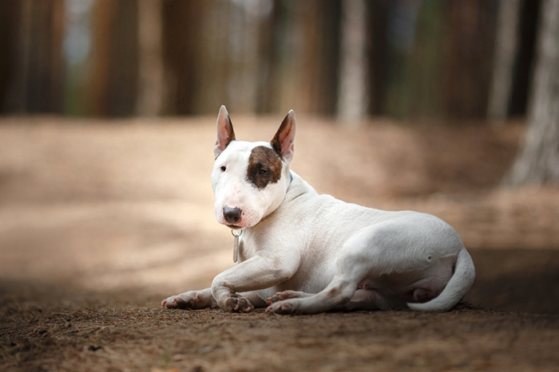
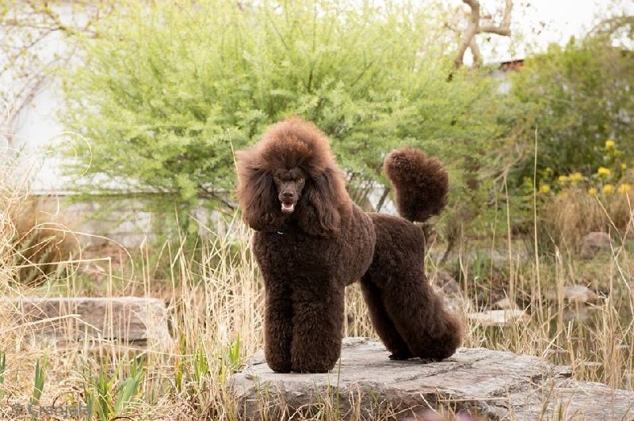

-
Německý ovčák
plemeno se silným instinktem k ochraně a vynikajícím zdrojem pracovní energie. Je to také populární plemeno jako společník pro rodiny.
-

Labrador Retriever
nejpopulárnější plemeno psa v USA, Labradoři jsou milí a přátelští psi s velmi inteligentní povahou. Jsou skvělými společníky pro rodiny s dětmi.
-

Bulteriér
plemeno s dobrým temperamentem a silným charakterem. Jsou to aktivní psi, kteří potřebují hodně pohybu.
-
Zlatý retrívr
podobně jako Labradoři jsou i zlatí retrívři milí, přátelští a velmi inteligentní psi. Jsou vynikajícími společníky pro rodiny.
-
Pudl
pudlové jsou inteligentní, aktivní a snadno trénovatelné psy. Jsou také hypoalergenní, což znamená, že jsou vhodní pro lidi s alergiemi.
-

Beagle
plemeno s dobrou povahou, které jsou oblíbené pro svou přátelskost a aktivní povahu. Jsou také skvělými psi pro lov.
-
Boxer
boxeři jsou silní a aktivní psi, kteří se snadno trénují a jsou skvělými společníky pro rodiny. Mají dobrý smysl pro humor a jsou velmi ochotní a loajální.
-
Bernský salašnický pes
velké plemeno s krásnou srstí. Bernští salašničtí psi jsou milí a přátelští psi, kteří jsou skvělými společníky pro rodiny.
-
Švýcarský salašnický pes
další velké plemeno, které se snadno učí a jsou velmi loajální ke svým majitelům. Švýcarský salašnický pes má tendenci být aktivní a potřebuje hodně pohybu.
-

Rottweiler
silné plemeno s vynikajícími schopnostmi k ochraně. Rottweileři jsou také velmi loajální a ochotní k poslušnosti, ale potřebují pevného vedení a trénink.
-
Siberian Husky
velmi aktivní plemeno s krásnou srstí. Sibiřští husky jsou inteligentní a mají silné instinkty k běhu. Jsou to také skvělí společníci pro venkovní aktivity.
-

Pudl střední
Pudl je malý až středně velký pes s kudrnatou srstí. Jsou to velmi inteligentní psi a jsou často využíváni jako psi asistenční a služební.
-
Doberman
Doberman je velký pes s krátkou srstí a mohutnými svaly. Jsou to psi s velmi silnou vůlí a jsou často využíváni jako strážní a ochranní psi.
-

Chihuahua
Chihuahua je malý pes s velkýma ušima a očima. Jsou to velmi milující psi a jsou skvělí společníci pro jednotlivce.